Custom Procedural Grass for Unreal Engine 5 for Unreal Engine 5
- A fully custom, GPU-driven procedural grass system for UE5, built from scratch using Unreal's Render Dependency Graph (RDG) to stage a fully programmable compute → vertex → pixel shader pipeline.
- Able to generate and render millions of grass blades each frame using an indirect, multi-LOD, instanced draw system. Grass blade geometry is based on a Bézier-curve shape, which allows programming animations directly inside the vertex shader.
- Supports full customization of the final grass field through parameters, including grass size and shape, material and growth and distribution of the clumps, calculated using an altered Voronoi algorithm.
Part I: Intro
The project stems from another (currently work-in-progress), where I required a field of grass for showcase; hence came the idea to implement my own system for grass generation instead of relying on the engine's own tools.
When doing research for references, I came across this very valuable presentation from Sucker Punch, where they go through a general rundown of their implementation of a similar system for Ghost of Tsushima. Most of the work came from turning that general description into an actual implementation, integrating it into Unreal's rendering pipeline and systems. The entire system is a fully custom solution, meaning it was built up without relying on any existing engine tool (vegetation system, Niagara, etc...). All of this is done without modifying the engine source.
The full source code can be found at the project plugin's GitHub page.
Part II: Overview
Near the beginning of the presentation, they mention "chopping" the world terrain into tiles, with the aim of splitting the generation and rendering of grass into sections, instead of the whole map at the same time.
Unreal already takes care of this for us through its landscape system, where each landscape is made up of several tiles (called "components" in the engine), each of which is rendered and loaded separately. For this reason we have tailored the system to landscapes only: it makes sense as that's the intended system in Unreal for open worlds, which is where you'd possibly want large fields of grass anyway.
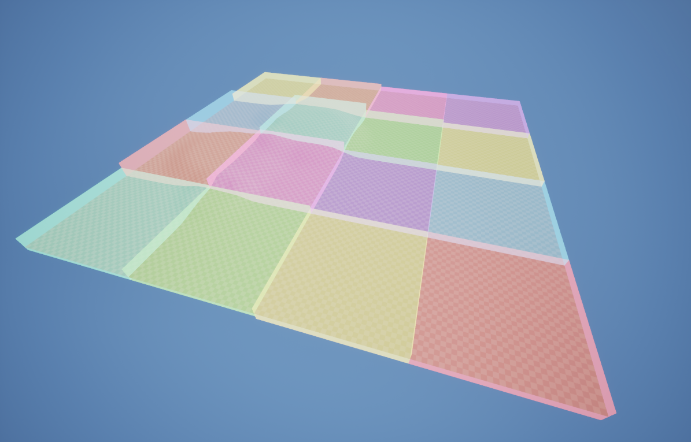
Once the terrain subdivision is in place, we can issue this pipeline for each tile:
- a compute shader, which generates grass data (position, height, bending, etc...) for the tile and stores it into a buffer;
- a vertex shader, which reads from the buffer and produces grass blade geometry: we can then use instancing to draw this to the screen in a single call per-tile;
- a pixel shader.
To put all of these things to work, we had to delve deep into several graphics programming systems of the engine, which will be presented briefly when encountered during the course of this article.
Render system
The main tool for writing modern rendering code in Unreal is the Render Dependency Graph (RDG). It allows describing custom rendering passes at a high-level; later on, the code is compiled in the form of a directed acyclic graph. RDG handles resource management for us, ensuring that they live throughout the graph execution, and proper optimized usage. Scheduling and synchronization are also taken care of by RDG.
RDG is a layer over another, low-level rendering code abstraction, called RHI (which is, in turn, a layer over the usual graphics programming APIs like Direct3D, Vulkan, etc...). Usage of RDG is preferred whenever possible, but we'll have to rely on RHI functions for things outside RDG scope.
Unreal has a separate render thread (RT) for rendering processes, which runs in parallel with the standard game thread (GT). Writing rendering code requires care typical of multithreaded programming. In its own internal code, Unreal uses proxies (copies) of game-thread objects to represent them on the RT. We have chosen to follow this architecture.
The entire system is hosted in a single
class UWorldSubsystem, whose lifetime, tied with the game world's,
is completely taken care of for us by the engine.
Another class, called class FCustomGrassRenderSystem, is its render-thread proxy. These two objects
fully manage the system on the GT and RT side, respectively.
The main concern of the render system class is to gather all the requests to render by the various grass components, sort them by priority or exclude them under certain conditions (for example, through distance or frustum culling). After the queue of rendering work has been finalized, the system can allocate per-frame buffers, assign them to grass tiles and dispatch the compute shaders to fill them up with grass data.
To run the compute shaders, we have to hook into the engine's rendering pipeline. For our case, we can rely on these simple delegates provided by the engine:
GEngine->GetPreRenderDelegateEx().AddRaw(this, &FCustomGrassRenderSystem::BeginFrame);
GEngine->GetPostRenderDelegateEx().AddRaw(this, &FCustomGrassRenderSystem::EndFrame);
We can then bind our two callbacks, BeginFrame() and EndFrame(),
to hook our rendering code at the beginning and end of the render pass.
We rely on the GetDynamicMeshElements() function, which is part of the
interface of any scene proxy, and is mainly responsible for mesh drawing (more on that later). The renderer
automatically calls this function for us on any mesh valid for drawing, so we can hook there for adding
rendering work.
As multiple tiles try to write concurrently to the render system, we re-use work from the previous frame to avoid flickering issues,due to race conditions between the various worker threads, when the camera is still.
As we have to draw potentially millions of grass blades per-frame, we use indirect, instanced draw calls. Each grass tile is a single draw call, which fits naturally with Unreal's convention of a single draw call per mesh component / proxy. Indirect drawing is required as the number of instances (the number of grass blades) is driven by the GPU through the main compute shader (more on that later).
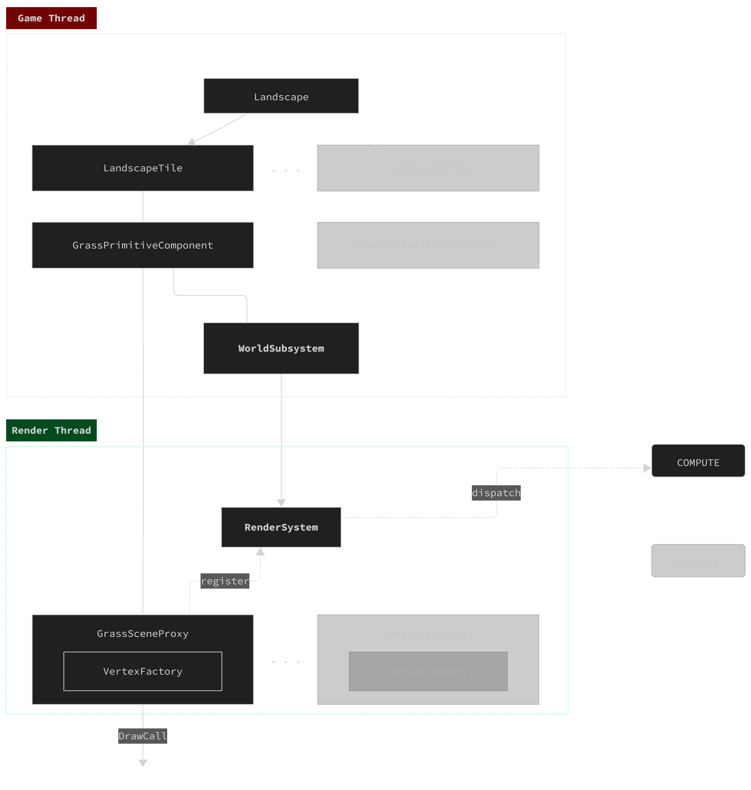
The original system from GoT used a double-buffer approach where only up to 4 tiles worth of memory are kept every frame, even though 8 tiles get processed. That's possible only by running compute pass interleaved with draw pass, so that as we run the VS and PS on four tiles another batch of compute shaders can run on the others at the same time.
Sadly, to my knowledge, such level of control of the rendering pipeline is not allowed in Unreal (at least without modifying the engine); we can't in any way schedule when the proxies send the draw calls and, at the same time, manually program the RDG graph. That means we have to ditch the two buffers for a less performant, single monolithic buffer approach.
We allocate a pooled buffer on construction according to its description:
const FRDGBufferDesc InstanceDataBufferDesc = FRDGBufferDesc::CreateStructuredDesc(
sizeof(FGrassBladeData), // Bytes per element
MaxRenderedTiles * InstanceCountPerTile); // Total num of elementsThen, we use weak, per-frame references to the buffer to register them safely into the RDG graph for the duration of the current frame.
struct FVolatileBuffers
{
FRDGBufferRef InstanceDataBuffer;
FRDGBufferSRVRef InstanceDataBufferSRV; // Shader resource-view,
// used by the vertex shader stage
FRDGBufferUAVRef InstanceDataBufferUAV; // Used in the compute shader stage for writing
// etc...
}void FCustomGrassRenderSystem::InitPerFrameResources(FRDGBuilder& GraphBuilder,
FVolatileBuffers& Buffers) const
{
Buffers.InstanceDataBuffer = GraphBuilder.RegisterExternalBuffer(InstanceDataBuffer);
// etc...
}The buffer is then ready to be passed as parameter to the compute shader.
The reason we do not create directly the instance data buffer inside the graph
(using GraphBuilder.CreateBuffer(...)) but register it as an external resource,
is because its lifetime goes beyond the execution of the graph, as we have to pass it to the
vertex shader / mesh draw pass (see the relative section).
An Unreal data asset is used to change parameters directly inside the editor, even in real time as the game or play-in-editor session is running.
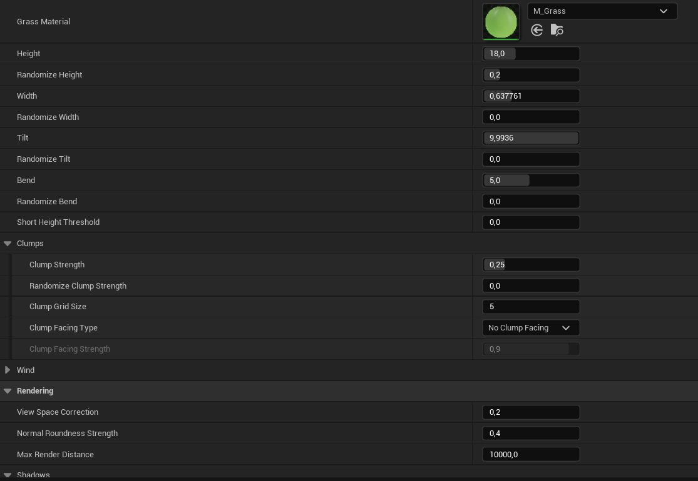
As always, it is simply sufficient to store a copy of the data asset on the RT and propagate changes from the GT by enqueueing a render command that copies the current state of the data, on every frame.
Compute shader
The whole compute pass is split in two shaders:
-
InstanceGrassBlades()- which constitutes the bulk of the pass - instances a grass blade for each thread, computes its world position and facing direction, and fills up other grass information (height, width, etc...). It also performs frustum / distance culling and discards threads accordingly. The surviving grass blade data is then written into the instance buffer;struct FGrassBladeData { FVector3f Position; FVector2f Facing; FVector3f TerrainNormal; float Height, Width, Tilt, Bend; uint32 Hash; }; -
InitIndirectDrawArgs(). This very simple shader runs on a single thread and writes the arguments for indirect instanced drawing (required later for the mesh draw call). This must run separately from the first as the total instance count must be known.
The idea to make grass grow in clumps, instead of appearing like a perfectly uniform field, was taken from the presentation: this gives off a much more realistic look. The clumping algorithm is essentially a Voronoi partition, partitioning the field into cells and making grass blades "gravitate" towards the center of the cell they belong to.
The positioning algorithm is then roughly like this:
-
use the compute shader's dispatch thread ID to get the position as UV coordinate inside the tile:
float2 UVPosition = DispatchThreadID.xy / InstanceCountPerTile;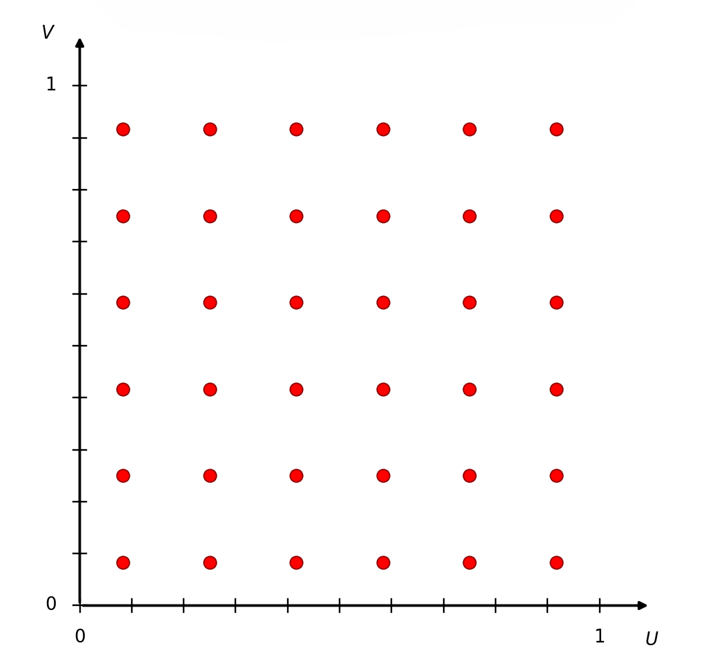
-
break up the resulting, grid-like distribution by applying a small random jitter to each instance;
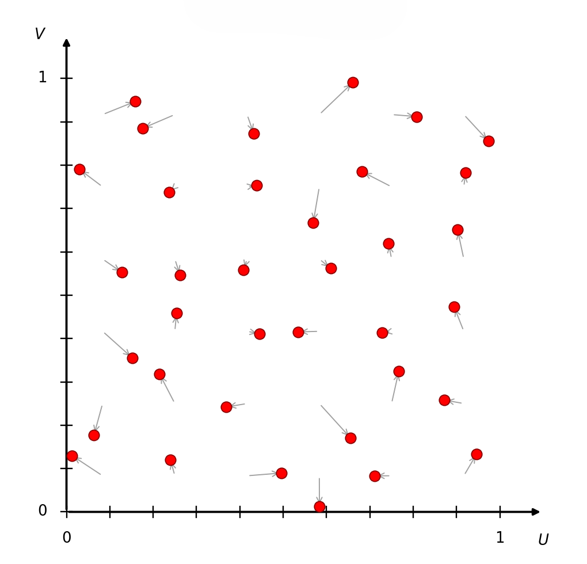
-
find the nearest clump center and pull the grass blade towards it, according to clump pull strength.
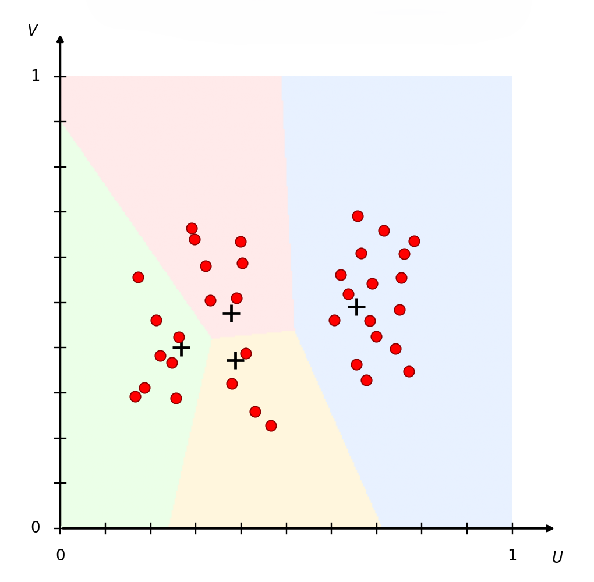
The carousel shows some of the possible combinations of the clumping system.
When switching tests from single to multiple tiles, we had to make sure the tiles appear seamless and give off the impression of a single, uniform grass field. This change involves switching from a seed "blind" to other tiles,
uint Seed = DispatchThreadID.x + DispatchThreadID.y * InstanceCountPerTileX;to a global seed:
float2 InstancesPerQuad = float2(InstanceCountPerTileX, InstanceCountPerTileY) / TileSizeInQuads;
// Tile offset from landscape origin.
int2 TileOffset = int2(SectionBaseX, SectionBaseY);
int2 GlobalInstancePos = TileOffset * InstancesPerQuad + DispatchThreadID.xy;
uint Seed = GlobalInstancePos.x + GlobalInstancePos.y;To introduce variation, each grass parameter is slightly altered by a random offset.
Mesh and vertex shader
We've used a custom mesh component to represent a tile of grass, subclassing the native
class UPrimitiveComponent (which represents a component in the scene containing geometry to be rendered).
Unreal already comes with a large variety of such components for various uses, (static meshes, skeletal meshes, etc...) but a custom one is required in order to manually program the vertex shader (or have any control whatsoever over the vertex buffer).
As we've previously shown, implementing a class UPrimitiveComponent implies writing its
RT-side proxy (class FPrimitiveSceneProxy) and its corresponding vertex factory. Inside the
material proxy, draw calls are issued in GetDynamicMeshElements().
Here we register various information:
...
Mesh.Type = PT_TriangleStrip;
// Usage flags
Mesh.bUseForMaterial = true;
Mesh.bUseForDepthPass = true;
...
FMeshBatchElement& BatchElement = Mesh.Elements[0];
BatchElement.IndexBuffer = VertexFactory->GetIndexBuffer();
// We pass an handle share with the render system, with the 'promise' that
// the buffer will be filled by the compute shader at the time of usage.
BatchElement.IndirectArgsBuffer = ResourceHandles->IndirectDrawArgs;
...
As can be seen, the proxies trust the render system to initialize the indirect draw args buffer through
a shared handle (a class TSharedPtr<T>). This
is naturally ensured by our compute pass running at the beginning of the render pass.
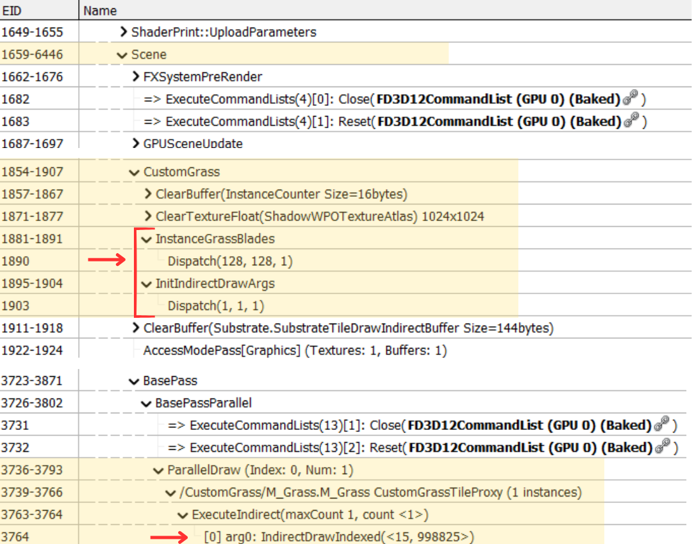
A vertex factory is, basically, an Unreal Engine abstraction over the vertex shader: it sets up vertex buffers, index buffers, defines shader parameters and binds them, etc...
Our grass blade geometry is constructed using only vertex and instance id:
struct FVertexFactoryInput
{
uint VertexId : SV_VertexID;
uint InstanceId : SV_InstanceID;
};No vertex buffers are bound (known as manual vertex fetch in Unreal).
We've split the implementation of the vertex shader into two files: VertexFactory.ush contains mostly boilerplate code required by the VF; inside VertexShader.ush resides the main logic.
As we've said, grass blade geometry is fully generated using just VertexId.
We construct the grass blade from a cubic Bézier curve; this makes it very easy to calculate the position of the vertices by simply evaluating the curve at various heights, calculate vertex normals through the Bézier derivative, and program animations for the grass.
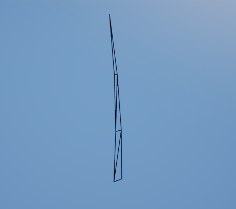
Blade normals are also slightly tilted outwards, to make the grass appear less flat.
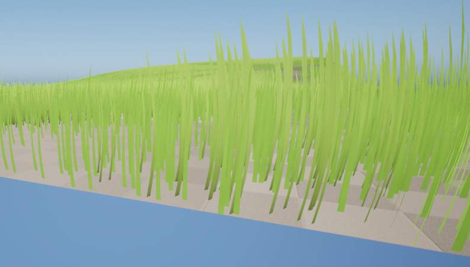
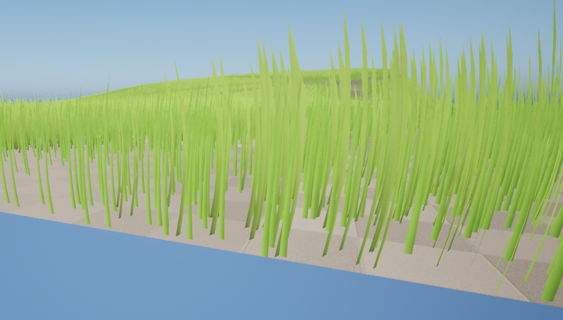
Using this approach, grass viewed side-on appears degenerate due to its zero thickness, rendering as visual artifacts or even completely invisible.
At first, I tried rotating the grass very subtly to always face the camera: we can obtain quite good results with this without making the grass look like it's moving. The issue with this solution is that it somewhat defeats having multiple grass directions as it homogenizes them towards a certain range of values.
A better approach is to slightly shift the position of vertices in view-space when looked at perpendicularly. This creates a fake thickness which also has the added benefit of making grass fields appear fuller.
The mesh does not support Nanite. Nanite "runs in its own rendering pass that completely bypasses traditional draw calls" (source). To make it so would require a total rewrite of the system and, to my knowledge, there's little to no documentation online about it.
Pixel shader
To shade the grass, we have built a very simple material. We have custom-made a 64 x 1 texture, stretched vertically across the blade, to represent the grass blade spline in the final color and drive glossiness.
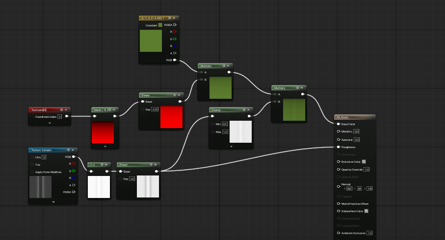
The material should normally use the "Two Sided Foliage" shading model for correct lighting on the backface (the lighting is not fully occluded by the grass leaf, but it's scattered by the surface, so that the backface gets some light too).
The presence of many small triangles very close to each other creates lots of visual noise, particularly in the presence of dense clumps of grass. To achieve a clean, final result, we relied on temporal antialiasing.
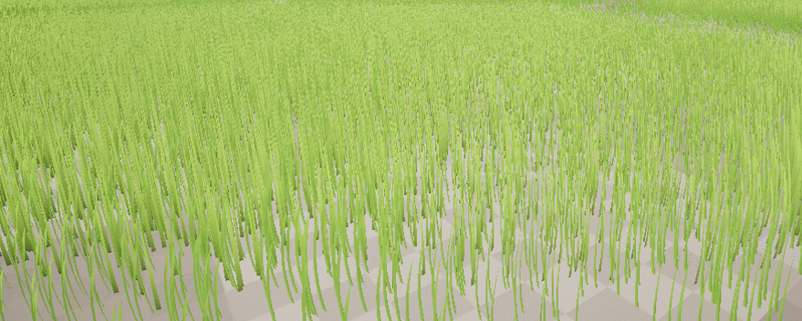
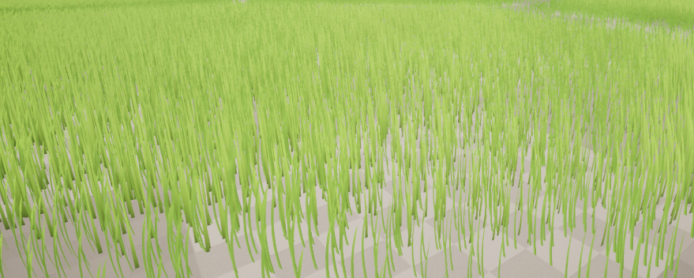
Shadows
This section is on a feature still undergoing active development.
There were major issues with letting the custom mesh cast shadows. Still, running the full shadow pass for each grass blade would be too costly. We've started using an imposter shadow proxy mesh, which is a common approach for foliage and also used in GoT. In the presentation, they mentioned offsetting the landscape vertices by grass height at that location, and writing from there in a dithered pattern to the shadow map.
At first, we've tried offsetting the landscape vertices directly, by using WorldPositionOffset (WPO) inside
the landscape material; then, we could've masked them off except for the shadow pass, using the
ShadowPassSwitch node.
This approach didn't work, probably due to peculiarities of the landscape mesh itself.
After some iterations, we were able to correctly set up the proxy mesh as a UStaticMesh,
whose geometry is generated at runtime as a copy of the landscape tile, and set to cast shadows while
invisible.
Unreal has several shadow algorithms, also depending on scene lighting. For grass fields in the open, we can assume our lighting setup to be made up mainly of a regular skylight and a directional light, representing light coming from the sun (or moon, at nighttime). The general solution we aim for consists of:
- dynamic lighting, so we take into account possible grass animation (like wind, or reacting to player movement);
- medium-large distance shadows, cast by the proxy, using shadow maps: these represent shadowing for the overall "mass" of grass;
- close-distance shadows using screen-space contact shadows, cast by each grass blade, to have more realistic "connection" between the grass mesh and the ground. These get simply enabled on the mesh and the directional light.
A texture atlas is prepared containing slots for GMaxRenderedTiles,
each slot containing:
- on the R channel, height information;
- on the G channel, density
Height and density respectively drive vertex offset and dithering: less density means more pixels discarded from the final shadow. Of course, density gets higher near clump centers, with stronger clumping, etc...
Initially, the shadow offset was calculated using exact grass height for each vertex, but a race condition between the writer threads would introduce slight jittering of the proxy mesh vertices between frames, depending on which grass blade would "write" into the texture last on that frame. This slight movement would mess with the TAA accumulation and dithering, leaving very dark noise on the shadowed grass blades.
We could choose to fix the race by introducing some kind of synchronization mechanism, but it was unnecessary: it was sufficient to let each thread write the same approximate grass height value (the maximum height), so that each would be writing the same value anyway, in fact eliminating the jittering.
Part III: Optimization & performance
We can pack the terrain normal vector using oct-encoding and float values in 16-bit uints.
This memory-efficient version of the struct FGrassBladeData makes each grass blade
go from 52B to 28B: the result is an almost halved memory cost for the instance buffer.
For around a million grass blades per tile and four tiles at a time, the cost goes down
from around 200MB to less than 100MB, which is quite an improvement in VRAM usage and bandwidth.
The system supports different LODs, which mainly regulate mesh resolution (its vertex count) and total blade count:
-
LOD0: 15 vertices per blade, 1024 × 1024 blades
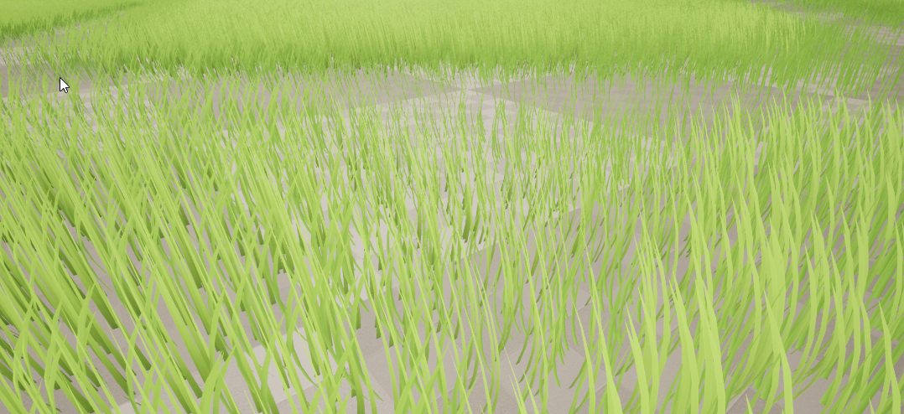
-
LOD1: 7 vertices per blade, 1024 × 1024 blades
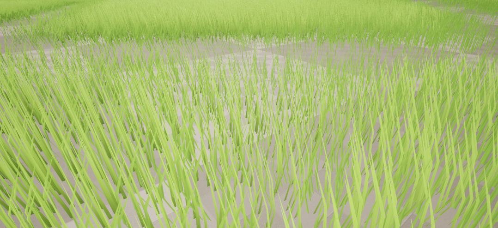
-
LOD2: 7 vertices per blade, 512 × 512 blades
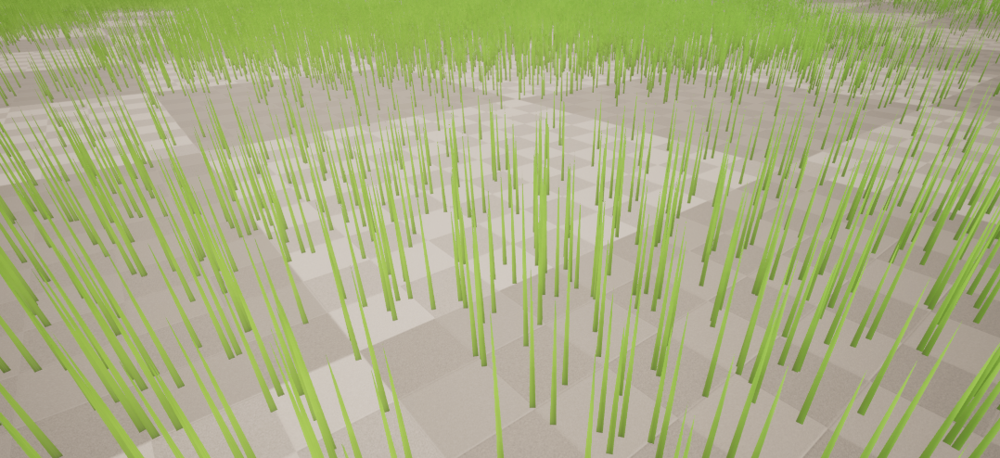
As can be seen, at high distances total instance count goes from slightly more than 1 million to around 260k. Additionally, LOD2 disables two-sided rendering for the mesh and makes each grass blade always face the camera, thus letting us benefit from backface culling for better performance without noticeable visual quality loss.
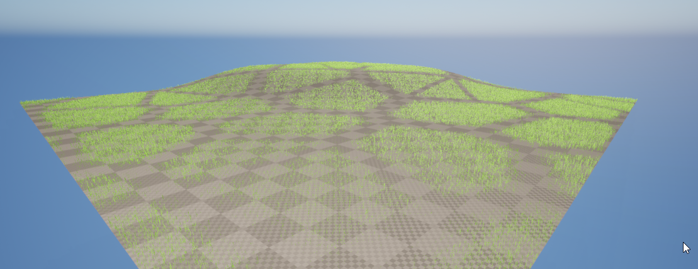
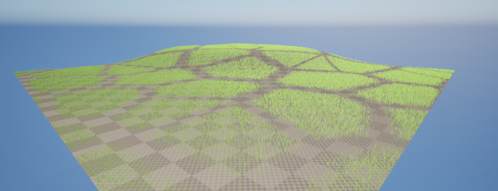
We use wave intrinsics to perform a compacted write inside the instance data buffer. This counters the internal fragmentation caused by culling inside a tile's memory region in the buffer (even though we can't compact the whole buffer), and improves cache locality. We can also reduce the total number of atomics from N to a single one.
bool IsCulled = TestInstanceCulling(GrassBlade);
uint LaneIndex_Wave = WavePrefixCountBits(!IsCulled);
uint VisibleBladeCount_Wave = WaveActiveCountBits(!IsCulled);
// Used to perform compact writing inside the buffer. Allows us
// to store all the grass blade data (for a tile) contiguously.
uint BufferWriteIndex = 0;
if (WaveIsFirstLane())
{
// Issue one atomic for the entire wave.
InterlockedAdd(OutInstanceCounter[TileIndex], VisibleBladeCount_Wave, BufferWriteIndex);
}
// Broadcast of the value calculated at lane 0.
BufferWriteIndex = WaveReadLaneFirst(BufferWriteIndex);
BufferWriteIndex += LaneIndex_Wave + TileIndex * BufferRegionSize;
if (!IsCulled)
{
OutInstanceDataBuffer[BufferWriteIndex] = GrassBlade;
}Group size for the main compute shader is set at 64: it is normally chosen because it maps well to a single wavefront in both NVIDIA and AMD GPU architectures (AMD wavefront = 64, NVIDIA warp = 32).
I was not able to test this on a consistent configuration, so the absolute values may vary; still, the relative costs in percentage should be consistent across performance levels.
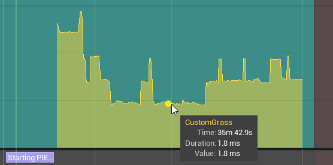
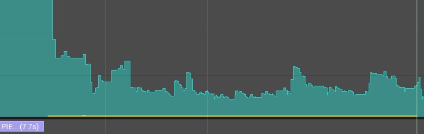
The CustomGrass compute pass takes 1.8ms, around 2% of frame time. The cost is dominated by the
InstanceGrassBlades() compute shader, which runs 4 times under the current
settings. The final cost of each instancing pass is determined by the number of threads / instances, depending on
level-of-detail and culling. The second compute shader takes almost no time: on average 0.01% of a frame.
An obvious optimization (not currently tested) would be to limit the number of rendered tiles depending on the current view, instead of going through the whole pipeline for 4 of them at all times. In most cases, two tiles are more than sufficient for covering all the visible terrain.
By looking at stat unit, it noticed that the Draw time was nearly equal to the Frame
time, meaning we are Draw bound. That prompted me to inspect the draw call cost inside base pass (and
other passes whose cost is determined by rendered geometry like prepass).
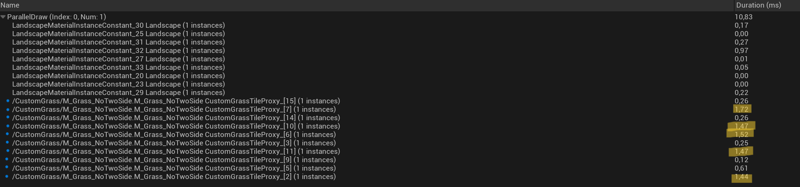
On the image above, you can see the draw calls in our test scene. It is clear that we are issuing draw calls for 10 grass tiles
(out of 16), even though we capped our number of rendered tiles to 4 (and 4 are visible in the final scene)!
It turns out that, with our current system, we are simply opting-out of rendering only for compute pass, while
the actual meshes have no knowledge of this: provided they pass frustum culling (which is why not all tiles are
showing up in that frame) they will simply get drawn if they hit this line in GetDynamicMeshElements():
Collector.AddMesh(ViewIndex, Mesh);This issue, of course, makes us waste lots of computation time (and it gets worse as the landscape grows larger). There's also the fact the visible tiles that not necessarily are those with a non-negligible cost, as, in the image, it clearly shows that 5 tiles are taking more than 1ms to draw on screen, with (at least) one of those being empty.
To fix this, we have to early-out of GetDynamicMeshElements() if our tile
was not selected for rendering. As always the fundamental ordering problem remains: selection happens after
each mesh sends its dynamic elements to the renderer. To work around this, we simply moved the selection
phase at the end of the frame, instead of at the beginning. On frame N-1,
we select the tiles valid for rendering for frame N, by "stamping" the frame number on a field in the class. So, when
GetDynamicMeshElements() runs on frame N, it checks early if the stamp matches
the current frame number: if not, the function terminates early and the tile skips drawing.
This 1 frame latency in rendering is almost negligible at normal frame rates, and minor hiccups like culling
showing up visually at the screen sides when turning the camera rapidly can be countered by simply "relaxing"
culling by virtually enlarging the cone of vision.
This is the final result on a frame:
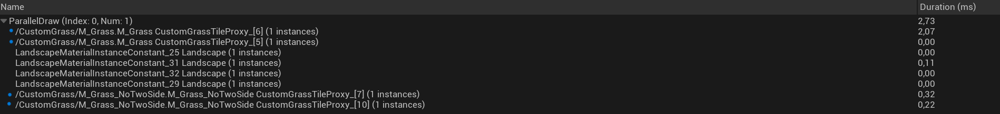
As seen above, drawing a semi-full, high LOD grass tile may take up to 9 times the time it takes to draw a tile at LOD2.
Sources
Below is a list of materials which helped with the realization of this project and were partially quoted in this article. For the general grass implementation:
On graphics programming in Unreal (global shaders, custom primitives, writing code for the render-thread, etc...):
- Advanced graphics programming in Unreal - Article series
- Creating a custom mesh component in UE4 - Article series
- Graphics Programming Overview - Unreal Docs
- Threaded Rendering - Unreal Docs
- Render Dependency Graph - Unreal Docs
- Nanite Virtualized Geometry Overview - Unreal Docs
For the optimization section: